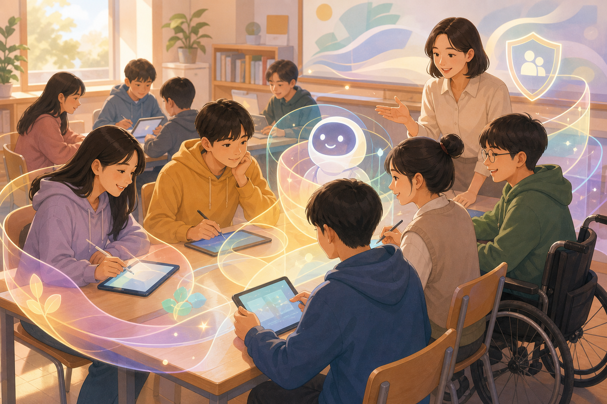

OpenAI, 청소년용 ChatGPT 접근은 ‘차단’보다 안전 설계가 중요하다고 강조

OpenAI가 청소년의 AI 사용을 무조건 막기보다 연령에 맞춘 보호 장치, 학습 도구, 보호자 기능, 전문가 협력을 통해 안전하게 접근시키는 방향을 설명했다. 글은 ChatGPT가 숙제 대행 도구가 아니라 질문을 풀어가고 사고 과정을 돕는 학습 파트너가 되도록 설계해야 한다는 메시지를 담고 있다. 교육 현장에서는 계정 설정, 사용 규칙, 위험 신호 대응이 함께 필요하다는 점도 분명해졌다.
인사이트: 교사와 교육 콘텐츠 제작자는 ‘AI 사용 금지’보다 인용·검증·개인정보·정서적 의존을 다루는 활동지를 준비하는 편이 현실적이다. 특히 미성년자 대상 워크숍에서는 보호자 안내, 결과물 검토, 민감한 상담을 AI에 맡기지 않는 경계선을 사전에 정해야 한다.